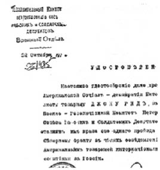

BÖLÜM VII

DEVRİM CEPHESİ


10 Kasım, Cumartesi...
Yurttaşlar!
Askerî Devrimci Komite devrimci düzenin herhangi bir şekilde bozulmasına göz yummayacağını ilan eder.
Hırsızlık, haydutluk, saldırı ve katliam teşebbüsleri şiddetle cezalandırılacaktır.
Komite, Paris Komünü’nü örnek alarak, herhangi bir düzensizlik kışkırtıcısını ya da yağmacıyı merhametsizce yok edecektir...
Şehirde vukuat yoktu. Ne bir saldırı, ne bir hırsızlık ve ne de bir sarhoş kavgası. Geceleyin silahlı nöbetçiler sessiz caddelerde geziyorlar, askerlerle Kızıl Muhafızlar köşe başlarında yaktıkları ateşlerin çevresinde gülüyor, şarkı söylüyorlar. Gündüz, büyük kalabalıklar kaldırımlarda toplanıyor, öğrencilerle askerler, tüccarlarla işçiler arasındaki bitmez tükenmez tartışmaları dinliyorlar.
Yurttaşlar sokakta birbirlerini durdurup soruyorlar:
“Kazaklar geliyor mu?”
“Hayır...”
“Son haber ne?”
“Hiçbir şey bilmiyorum. Kerenski nerede?”
“Petrograd’a sadece sekiz verst uzaktaymış diyorlar… Bolşeviklerin Avrora zırhlısına kaçtıkları doğru mu?”
“Öyle diyorlar...”
Bağırıp çağıran yalnız duvardaki beyannameler ve birkaç gazete, suçlamalar, bildiriler, kararnameler...
Büyük bir kâğıtta Köylü Delegeleri Sovyetleri Yürütme Komitesinin bir bildirisi:
(Bolşevikler) Köylü Delegeleri Sovyetleri’nin kendilerini desteklediğini ve kendilerinin köylü temsilciler adına konuştuklarını söylemeye kalkıyorlar...
Rusya’nın bütün emekçi halkı bilsin ki bu bir YALANDIR VE RUSYA KÖYLÜ DELEGELERİ SOVYETLERİ YÜRÜTME KOMİTESİ’NİN ŞAHSINDA, BÜTÜN EMEKÇİ KÖYLÜLER, emekçi sınıfı iradesinin bu alçakça ihlaline örgütlenmiş köylülerin katılmalarını tiksintiyle karşılar...
Sosyalist Devrimci Parti’nin Askerî Bölümü’nden:
Bolşeviklerin çılgınca teşebbüsü iflas etmek üzeredir. Garnizon bölündü... Bakanlıklar grev yaptılar ve ekmek gün geçtikçe azalıyor. Bolşeviklerden başka bütün partiler kongreden çekilmişlerdir. Bolşevikler yalnız kaldılar...
Bütün aklı başında unsurları Yurt ve Devrim Komiteleri çevresinde toplanmaya ve Merkez Komitesinin ilk çağrısına katılmaya hazırlıklı olmaya çağırıyoruz...
Cumhuriyet Konseyi’nin elden dağıttığı bir bildiride Bolşeviklerin hataları sayılıyor:
Cumhuriyet Konseyi süngü gücü karşısında ayrılmak ve toplantılarına geçici olarak ara vermek zorunda kaldı.
Dillerinden “özgürlük ve sosyalizm” lafını düşürmeyen soyguncular kendi istedikleri gibi bir zorbalık egemenliği kurmuşlardır. Geçici Hükümet’in üyelerini tutuklamışlar, gazeteleri kapatmışlar, basımevlerini ele geçirmişlerdir... Bu iktidar halk ve devrim düşmanı sayılmalıdır; onunla savaşmak ve onu devirmek gerekiyor...
Cumhuriyet Konseyi Rusya Cumhuriyeti yurttaşlarını, konsey yeniden çalışmaya başlayıncaya kadar, Bolşeviklerin devrilmesini ve yurdu Kurucu Meclis’e götürecek bir hükümet kurulmasını örgütlemekte olan Yurt ve Devrim Komiteleri’nin çevresinde toplanmaya çağırır.
Diyelo Naroda şunları yazıyor:
Devrim bütün halkın ayaklanmasıdır... Ama bizde kim ayaklandı? Lenin ve Troçki’nin aldattığı bir avuç deli... Çıkardıkları kararnameler ve çağrılar tarihte garip olaylar müzesini zenginleştirmekten başka bir işe yaramayacak...
Ve Halkçı Sosyalist Narodnoya Slovo (Halkın Sesi) gazetesi de şöyle yazıyordu:
“İşçi ve köylü hükümeti” mi? Boş hayal! Ne Rusya, ne de müttefiklerimizin ülkelerinde kimse bu hükümeti tanımayacak... düşman ülkeler bile...
Burjuva basını geçici olarak ortalıktan kaybolmuştu...
Pravda, artık Rusya Sovyet Cumhuriyeti Parlamentosu olan yeni Çayika’nın ilk toplantısını anlatıyor. Tarım Komiseri Miliutin Köylü Yürütme Komitesi’nin, Aralıkın 13’ünde bir Rusya köylü kongresi toplamaya karar verdiğini açıklıyor.
“Ama biz bekleyemeyiz,” diyor. “Köylülerin desteğini kazanmalıyız. Bizim bir köylü kongresi toplamamızı ve bunu da hemen yapmamızı teklif ediyorum...” Sol Sosyalist Devrimciler kabul ediyorlar. Rus köylülerine yapılacak çağrının müsveddesi acele hazırlanıyor ve projeyi gerçekleştirmek üzere beş kişilik bir komite seçiliyor.
Toprak dağıtımına ve işçilerin sanayiyi denetimine ait ayrıntılı planlar sorunu, bu sorunlar üzerinde çalışan uzmanlar raporu hazırlanıncaya kadar erteleniyor.
Üç kararname okunmuş ve onaylanmıştı (1): Birincisi Lenin’in “Genel Basın Kuralları” idi. Bu kurallara göre yeni hükümete karşı koymayı ve itaatsizliği kışkırtan, halkı suç işlemeye iten ya da haberleri bile bile değiştiren bütün gazeteler kapatılacaktı; ikincisi, ev kiralarına moratoryum ilan eden kararname idi; üçüncüsü, bir işçi milisi kurulmasını öngören kararname. Bu arada, belediye meclislerine, boş apartmanları ve evleri tahsis etme yetkisi veren bir kararname ile demiryolları istasyonlarında marşandiz vagonlarının boşaltılmasını, ihtiyaç maddeleri dağıtımının hızlandırılmasını ve ihtiyacı çok duyulan tekerlekli araçların serbest bırakılmasını emreden kararnameler de çıkmıştı...
İki saat sonra Köylü Sovyetleri Yürütme Komitesi bütün Rusya’ya aşağıdaki telgrafı gönderdi:
Bolşeviklerin “Milli Köylü Kongresi Örgüt Bürosu” denen derme çatma örgütü, bütün köylü sovyetlerini Petrograd kongresine delege göndermeye çağırmıştır...
Köylü Delegeleri Sovyetleri Yürütme Komitesi şunu bildirir ki, dün olduğu gibi bugün de, emekçi sınıfının ve yurdun kurtuluşu için tek yol olan Kurucu Meclis seçimlerine gerekli kuvvetlerin şu anda vilayetlerden ayrılmaları tehlikelidir. Köylü Kongresi tarihinin 13 Aralık olduğunu tekrarlarız.
Duma’da herkes heyecan içindeydi: Subaylar gelip gidiyor, Belediye Başkanı Kurtuluş Komitesi liderleriyle konferans halinde bulunuyordu. Bu sırada, bir üye Kerenski’nin bildirisini getirdi. Nevski’ye alçaktan uçan bir uçaktan atılmıştı. Bildiride, teslim olmayanlardan büyük intikam alınacağı söylenmekte ve askerlere hemen silahlarını bırakıp Mars meydanında toplanmaları emredilmekteydi.
Bize söylediklerine göre, Başbakan Çarskoye Selo’yu almış, Petrograd varoşlarından beş mil uzaktaymış. Şehre yarın, birkaç saat içinde girebilirmiş. Sovyet birlikleri ile Kazaklar birbirlerine yaklaşmışlar, Sovyet birlikleri Geçici Hükümet’ten yana geçiyorlarmış. Çernov bu iki kutup arasında bir yerdeydi. O, “tarafsız” askerleri iç savaşı durduracak bir kuvvet haline getirmeye çalışıyordu.
Şehir garnizonundaki alayların da Bolşevikleri bıraktıkları söyleniyordu. Smolni’de çoktan kimse kalmamış, hepsi kaçmış.... Bütün hükümet makinası durmuştu. Merkez Bankası memurları Smolni’den gönderilen komiserlerin emrinde çalışmak istememişler, onlara para vermemişlerdi. Bütün özel bankalar kapanmıştı. Bakanlıklar grev yapmıştı. Şu anda bile bir Duma Komitesi tüccarları geziyor, grevlere para topluyordu... (2)
Troçki hemen Dışişleri Bakanlığı’na gitmiş, Barış Kararnamesi’nin yabancı dillere çevrilmesini emretmiş. O anda altı yüz memur yüzüne karşı istifalarını vermişler... Çalışma Komiseri Şliyapnikov bütün bakanlık memurlarının yirmi dört saat içinde işleri başına dönmelerini emretmiş, aksi halde işlerinden atılacaklarını ve emeklilik haklarını kaybedeceklerini bildirmiş, ama bu emre yalnızca hademeler boyun eğmiş... Özel İaşe Komitesi’nin bazı kolları Bolşeviklere teslim olmaktansa işleri savsaklamayı kararlaştırmışlar... Telefon santralindeki santral memurlarına yüksek maaş verileceği ve daha iyi durumlar sağlanacağı uzun uzun anlatılmış, ama memurlar, Sovyet karargâhlarının telefonlarını bağlamamakta inat etmişler...
Sosyalist Devrimci Parti, Sovyetler Kongresi’nde kalan bütün üyelerini ve ayaklanmaya katılanları partiden atmaya karar vermişti...
Vilayetlerden gelen haberler: Moghilev Bolşeviklere karşı olduğunu açıkladı, Kiev’de Kazaklar sovyetleri ele geçirdiler ve bütün devrimci liderleri tutukladılar. Otuz bin kişi kadar olan Luga Sovyeti ve garnizonu Geçici Hükümet’e bağlılıklarını bildirdi ve bütün Rusya’nın kendi çevrelerinde toplanmasını istedi. Kaledin, Don bölgesindeki bütün sovyetleri ve sendikaları kapattı, askerleri de kuzeye doğru yürüyor...
Demiryolları işçilerinin bir temsilcisi şunları söyledi: “Dün Rusya’nın her yanına telgraf gönderdik, siyasi partiler arasındaki savaşın bitmesini ve bir sosyalist koalisyon hükümetinin kurulmasını istedik. Yoksa yarın akşam grev ilan edeceğiz... Sabahleyin bütün partiler bir araya gelerek bu sorunu konuşacaklar. Bolşevikler uzlaşmaya yanaşıyorlar gibi...”
Tıknaz, sağlam yapılı bir adam olan Şehir Baş Mühendisi “Bu kadar bile kalmaları hayret,” diye güldü...
Smolni’ye çıktığımızda Smolni’nin boşaltılmamış olduğunu, eskisinden daha çok hızla çalışıldığını, birçok işçi ve askerin girip çıktığını, her yerde nöbetçilerin bir misli arttırılmış olduğunu gördük. Burjuva ve “ılımlı” sosyalist gazetelerin yazarlarına rastladık.
Volya Naroda gazetesinden biri, “Atın bizi öyleyse dışarıya!” diye bağırdı. “Bonç-Bröviç basın bürosuna geldi ve hepimize çıkıp gitmemizi söyledi! Bize casuslar dedi!” Gazetecilerin hepsi birden konuşmaya başlamıştı, “Hakaret! Küstahlık! Nerede kaldı basın hürriyeti!”
Sofadaki büyük masaların üzerinde Askerî Devrimci Komite’nin yayımladığı bildiriler, çağrılar, kararlar paket paket duruyor. Masanın yanından geçen işçiler ve askerler paketleri alıp dışarıdaki otomobillere götürüyorlar.
Bildirilerden biri şöyle başlıyordu:
TEŞHİR EDİYORUZ!
Rus halk yığınlarının içinde bulunduğu bu trajik anda Menşeviklerle onları izleyenler ve Sağ Sosyalist Devrimciler, işçi sınıfına ihanet etmişlerdir. Kornilov, Kerenski ve Savinkov’dan yana olmuşlardır... Vatan haini Kerenski’nin emirlerini bastırıp yaymakla ve bir panik havası yaratmakla bu döneklerin zaferleri üzerine gülünç söylentilerin yayılmasına sebep olmaktadırlar...
Yurttaşlar! Bu asılsız söylentilere inanmayın. Halk devrimini yenecek hiçbir kuvvet yoktur... Başbakan Kerenski ile onu izleyenler hızla yaklaşan hak ettikleri cezayı beklemektedirler...
Biz onları halkın önünde teşhir ediyoruz. Onları, eskiden zincir vurmak istedikleri işçilerin, bahriyelilerin ve köylülerin intikamına bırakıyoruz. Onlar halkın kin ve nefret lekelerini hiçbir zaman üzerlerinden silemeyeceklerdir.
Lanet olsun ihanet edenlere, yazıklar olsun onlara!...
Askerî Devrimci Komite daha büyük bir yere taşınmıştı, üst katta 17 numaralı oda. Kapıda Kızıl Muhafızlar duruyor. İçeride, parmaklığın önündeki dar bir yerde, üstü başı temiz, dışarıdan bakışları iyi, ama içleri suç dolu, birtakım adamlar birikmiş: otomobilleri için vesika almak ya da şehirden çıkmak için izin isteyen burjuvalar, aralarında birçok yabancı da var. Bill Shatov’la Peters görevli. Bütün öteki işlerini bıraktılar, son gelen haberleri okudular bize.
179. Yedek Alay oybirliğiyle destekleme kararı almış. Putilov rıhtımlarında çalışan beş bin liman işçisi yeni hükümeti tebrik ediyor. Sendikalar Merkez Komitesi memnunlukla destekliyor. Reval’deki garnizon ve filo işbirliği yapmak ve asker göndermek üzere Askerî Komiteler seçmiş. Askerî Devrimci Komiteler Pskov ve Minsk’de yönetimi ellerinde tutuyorlar. Çariçin, Don kıyısındaki Rovno, Çernigovsk ve Sivastopol sovyetlerinden tebrikler... Finlandiya Tümeni, 5. ve 12. orduların yeni komiteleri bağlılıklarını bildiriyorlar...
Moskova’dan gelen haberler birbirini tutmuyor: Askerî Devrimci Komite askerleri şehrin stratejik noktalarını ele geçirmişler; Kremlin’de görevli olan iki bölük sovyetlerden yana olmuş, ama silah deposu albay Diyabtsev ile yunker’lerin elindeymiş. Askerî Devrimci Komite işçiler için silah istemiş, Diyabtsev sabaha kadar müzakere etmiş, sonunda birdenbire bir ültimatom vererek sovyet birliklerinin teslim olmalarını ve komitenin dağılmasını istemiş. Çatışma başlamış...
Petrograd’daki Genelkurmay Smolni’deki komiserlere teslim olmuştu. Teslim olmayı kabul etmeyen Centroflot, Dibenko ve bir bölük Kronstad bahriyesi tarafından ateşe tutulmuştu. Baltık ve Karadeniz savaş gemilerinin desteklediği yeni bir Centroflot kurulmuştu.
Ama bütün bu yeni haberlerin altında kötü bir koku, havada bir çeşit tedirginlik vardı. Kerenski’nin Kazakları hızla geliyorlardı; topçuları da vardı. Fabrika-atölye komiteleri sekreteri Skripnik, yüzü asık ve solgun, örgütlerinin bir ordu kadar çok olduğunu bana temin etti ve sonra öfkeyle ekledi: “Bizi canlı yakalayamazlar.” Petrovski yorgun yorgun güldü. “Belki yarın artık uyuruz... uzun bir uyku...” Sıskası çıkmış, kızıl sakallı Lozovski, “Bizim şansımız ne ki?” dedi. “Yalnızız... Talimli askerlerin karşısında kuru bir kalabalık...”
Güneyde ve güney doğuda sovyetler Kerenski kuvvetleri önünde kaçmışlardı. Gaçina, Pavlovsk, Çarskoye Selo garnizonları bölünmüştü... Yarısı tarafsız kalmayı seçmişler, geri kalanlar da, subaysız olarak korkunç bir düzensizlik içinde başkente doğru dağılmışlardı.
Hollere bültenler yapıştırılıyordu.
KRASNOYE SELO’DAN, 10 KASIM, SABAH SAAT 8
Bütün Kurmay Başkanlarına, Komutanlara, her yere ve herkese, her yana bildirilir:
Eski Başbakan Kerenski her yere ve herkese bile bile yanlış bir telgraf göndermiş ve Petrograd devrimci birliklerinin silahlarını bırakarak teslim olduklarını, ihanet hükümeti olan eski Geçici Hükümet’e katıldıklarını, Askerî Devrimci Komite’nin askerlere çekilme emri verdiğini bildirmiştir. Özgür bir ulusun askerleri ne çekilir ne de teslim olur.
Askerlerimiz, yanlış yola sapmış olan Kazak kardeşlerimizle kendi Kuvvetlerimiz arasında kan akıtmamak ve daha uygun bir duruma geçmek için Gaçina’yı bırakmışlardır. Bugün çekildiğimiz mevzilerde Kerenski ile silahlı arkadaşları kuvvetlerini on misli arttırsalar bile, telaşlanmaya sebep yoktur. Askerlerimizin morali yüksektir.
Petrograd sakindir.
Petrograd ve Petrograd Bölgesi Savunma Başkanı
YARBAY MURAVİYEV
Biz Askerî Devrimci Komite’den çıkarken Antonov içeri girdi. Elinde bir kâğıt vardı. Rengi ölü gibi sapsarıydı. “Bunu gönderin,” dedi.
BÜTÜN İŞÇİ DELEGELERİ BÖLGE SOVYETLERİNE VE FABRİKA-ATÖLYE KOMİTELERİNE
Emir:
Kerenski’nin Kornilovcu haydutları başkente yaklaşmaktadırlar. Halka ve halkın başarılarına karşı girişilecek herhangi bir karşıdevrimci teşebbüsün merhametsizce ezilmesi için gereken bütün emirler verilmiştir.
Devrim ordusu ve Kızıl Muhafızların, işçilerin acele yardımlarına ihtiyaçları vardır.
MAHALLİ SOVYETLER VE FABRİKA - ATÖLYE KOMİTELERİNE ŞUNLARI EMREDİYORUZ:
1. Siper kazmak, barikat yapmak ve tel örgüleri takviye etmek üzere olabildiği kadar çok sayıda işçi gönderilecektir.
2. Bunun için fabrikada işi durdurmak gerekirse bu da yapılacaktır.
3. Elde ne kadar dikenli ve dikensiz tel varsa, siper kazmak ve barikat yapmak için ne kadar araç varsa, bir araya toplanacaktır.
4. Elde ne kadar silah varsa birlikte getirilecektir.
5. DİSİPLİNE KATİYETLE UYULACAK VE HERKES DEVRİM ORDUSUNA BÜTÜN İMKÂNLARIYLA YARDIMA HAZIR BULUNACAKTIR.
Petrograd İşçi ve Asker Askerî Devrimci Komite
Delegeleri Sovyeti Başkanı Başkanı
HALK KOMİSERİ BAŞKOMUTAN PODVOYSKİ
LEON TROÇKİ
Karanlık ve tatsız açık havaya çıktığımızda, gri ufuktaki fabrika bacalarının hepsi düdüklerini öttürüyor, kaba ve sinirli sesleriyle sanki gelecek felaketi haber veriyorlardı. On binlerce işçi, kadın ve erkek, fabrikalardan çıkıyor; insanların kaynaştığı yoksul kenar mahalleler, pis ve fukara sürülerinden on binlercesini kusuyor. Kızıl Petrograd tehlikede! Kazaklar geliyor! Güneyde ve güney doğudaki çamurlu yollardan çıkarak Moskovski kapısına doğru yürüyorlar. Erkekler, kadınlar, çocuklar; silahlı, sopalı, kazmalı, kürekli; ellerinde tel kangalları, işçi elbiselerinin üstünde fişeklikler... Bir şehrin bu kadar büyük bir güçle ve bu kadar kendiliğinden sokağa döküldüğü görülmemiştir şimdiye dek! Seller gibi akıyorlar; yanlarında bölük bölük askerler, toplar, kamyonlar, arabalar...
Smolni’nin kapısında bir otomobil duruyor. Zayıf bir adam. Kalın gözlükleri kırmızılaşmış gözlerini büyültüyor. Zorla konuşuyor. Elleri eski püskü paltosunun ceplerinde. Otomobilin çamurluğuna dayanmış. Başka biri de kocaman sakallı bir bahriyeli. Genç, parlak gözleri var. Çevrede sinirli sinirli dolaşıyor. Elinden düşürmediği mavi çelikten kocaman tabancasıyla dalgın dalgın oynuyor. Bu iki kişiden biri Antonov, ötekisi Dibenko.
Birkaç asker otomobilin basamağına iki asker bisikleti bağlamaya çalışıyor. Şoför çok kızgın. Otomobilin boyası bozulacak diyor. Gerçi o da bir Bolşevik ama otomobil de bir burjuva otomobili. Evet, bisikletleri emirerleri kullanacaktı, ama işte şoförün de meslek aşkı kabarmıştı... Sonunda bisikletleri indirdi aşağıya.
Savaş ve Donanma Halk Komiserleri devrimci cepheyi teftişe gidiyorlardı. Kim bilir neredeydi bu cephe! Onlarla birlikte gidebilir miydik? Elbette ki hayır. Otomobil ancak beş kişi alıyor. İki komiser, iki emireri ve bir şoför. Ama, adını burada Truşiska diye anacağım bir Rus tanıdık hiç aldırmadan otomobile girdi, oturdu. Kimsin diyen yok...
Truşiska’nın bu gezi sonunda bana anlattıklarının doğruluğundan şüphe etmek için bir neden görmüyorum. Suvorovski Prospekt’ten geçerlerken içlerinden biri yemekten söz etmiş. İaşesi doğru dürüst sağlanamayan bir ülkede belki üç ya da dört günden beri aç olabilirlerdi. Arabayı durdurmuşlar. Para? Savaş Komiseri ceplerini karıştırmış. Bir tek kopek bile bulamamış. Donanma Komiseri’nde dersen metelik yok, şoförde de öyle. Truşiska para verip biraz yiyecek aldırmış.
Nevski’yi dönerken lastiklerden biri patlamış.
“Şimdi ne yapacağız!” diye sormuş Antonov.
Dibenko tabancasını sallayarak, “Başka bir makinaya el koruz!” demiş. Antonov caddenin ortasına çıkmış, bir askerin yönettiği bir otomobile eliyle durmasını işaret etmiş.
“Bu makinayı bana ver,” demiş Antonov.
“Vermem,” diye cevap vermiş asker.
“Benim kim olduğumu biliyor musun?” Antonov bir kâğıt çıkarmış, üzerinde kendisinin Rus Cumhuriyeti Ordularının Başkomutanı olduğu ve herkesin kendisine sorgusuz sualsiz itaat etmesi gerektiği yazılı.
“Sen Tanrının kendisi bile olsan vız gelir!” demiş asker kızarak. “Bu makina 1. Mitralyöz Alayı’nın malı. İçinde cephane var ve sana da vermem...”
İtalyan bayrağı taşıyan eğri büğrü bir taksinin görünmesiyle bu zorluk çözülmüş (kargaşalık sırasında özel arabaları el konulmaktan kurtarmak için, yabancı konsolusluklar adına tescil ediyorlardı). Arabanın içinden pahalı bir kürk giymiş bir yoldaş çıkmış ve ekip yoluna devam etmiş.
On mil kadar uzakta bulunan Narskaya Zastava’ya varıldığında Antonov Kızıl Muhafız komutanını aramış. Onu almışlar şehrin kenarına götürmüşler. Burada beş yüz kadar işçi siper kazmış. Kazakların gelmesini bekliyorlarmış.
“Her şey tamam mı, yoldaş?” diye sormuş komutan.
“Her şey tamam, yoldaş” diye cevap vermiş komutan. “Askerlerin morali yüksek... Yalnız bir şey yok... Cephane...”
“Smolni’de iki milyar şerit var,” demiş Antonov. “Ben senin için bir emir yazayım.” Ceplerini karıştırmış. “İçinizde kâğıdı olan var mı? ”
Dibenko’da da yokmuş... Kuryelerde de yok. Trusişka not defterini uzatmış.
“Hay Allah kahretsin! Kalem de yok!” diye bağırmış Antonov. “Kimde var?” Truşiska uzatmış.
Biz cepheye teftişe gidemeyenler, Çarskoye Selo istasyonuna doğru yürümeye başlamıştık. Biz yürüdükçe kimileri süngülü, kimileri süngüsüz, ama hepsi silahlı birtakım Kızıl Muhafızların Nevski’ye doğru yürüdüklerini görüyorduk. Kışın erken karanlığı basmaya başlamıştı. Soğuk havada, başlar yukarıda, dörder dörder, düzensiz olarak, şarkı söylemeden, önlerinde trampet olmadan yürüyorlar. Yaldızla kabaca, “Barış! Toprak!” yazılı kızıl bir bayrak üzerlerinde dalgalanıyor. Çok gençtiler. Yüzlerinde ölüme gittiklerini bilenlerin ifadeleri vardı... Kaldırımlardaki halk yarı korkuyla, yarı hor bir bakışla, kinli bir sessizlik içinde geçişlerini seyrediyor...
Tren istasyonunda Kerenski’nin ya da cephenin nerede olduğunu bilen birine rastlayamadık. Ama trenler Çarskoye’den öteye gitmiyorlardı.
Bizim bindiğimiz vagon, evlerine dönen köylüler ve pazarcılarla doluydu. Hepsinin, ellerinde paketler ve akşam gazeteleri var. Herkes Bolşevik ayaklanmasından söz ediyor. Bu konuşmalar olmasa, iç savaşın kudretli Rusya’yı ikiye ayırdığını ve trenin savaş bölgesine gittiğini insana hatırlatacak başka hiçbir belirti yok. Hızla basmakta olan karanlığın içinde askerlerin şehre giden çamurlu yollar boyunca yürüdüklerini, kollarını sallayarak konuştuklarını pencereden görüyorduk. Yanımızda bir marşandiz treni durdu. İçi asker dolu. Büyük büyük ateşler yakmışlar. Hepsi bu kadar işte. Arkamızda ufukta şehir pırıl pırıl ışıklar içinde kayboluyor, uzakta bir tramvay bir banliyöye gidiyor...
Çarskoye Selo sessizdi, yalnız öbek öbek askerler orada burada toplanmışlar, hafif sesle konuşuyorlar ve Gaçina’ya giden boş demiryoluna tedirgin tedirgin bakıyorlardı. Hangi tarafta olduklarını içlerinden birkaçına sordum. “Bilmem,” dedi biri “işin aslını bilmiyoruz ki... Kerenski’nin provokatör olduğu doğru, ama Rusların da Rusları öldürmelerini doğru bulmuyoruz...”
İstasyon komutanının bürosunda güleryüzlü, sakallı bir asker duruyor. Bir alay komitesinin kırmızı bandı var kolunda. Smolni’den aldığımız kâğıtlar hemen herkeste bize karşı bir saygı uyandırdı. Asker açıkça sovyetlerden yana, ama korkuyor.
“Kızıl Muhafızlar iki saat önce buradaydılar, ama gittiler. Bu sabah buraya bir komiser geldi, Kazaklar gelir gelmez, o da Petrograd’a döndü.”
“Demek Kazaklar buralara kadar geldiler?”
Adam kederli kederli başını eğdi: “Bir çatışma oldu. Kazaklar erken saatlerde geldiler. Adamlarımızdan iki üç yüzünü yakaladılar, yirmi beş kadarını da öldürdüler.”
“Şimdi nerede Kazaklar?”
“Buradan çok uzaklaşmadılar. Nerede olduklarını da tam olarak bilmiyorum. Şu yanlarda bir yerdeler...” Kolunu batıya doğru belli belirsiz uzattı.
Akşam yemeği yedik... Güzel bir akşam yemeği. Petrograd’dakinden daha iyi ve daha ucuz. İstasyon lokantasında. Yakınlarımızda bir Fransız subayı oturuyordu. Gaçina’dan yürüye yürüye gelmiş. Gaçina’da durum sakinmiş. Şehir Kerenski’nin elindeymiş. “Ah bu Ruslar yok mu!” diye sözüne devam etti. “Çok orijinal insanlar! Ne iç savaş ne iç savaş! Her şey var, savaş yok!”
Şehre çıktık. İstasyon kapısında tüfekleri süngülü iki asker duruyor. İki yüz kadar memur, öğrenci, tüccar çevrelerini sarmışlar, bağıra bağıra askerlerle tartışıyorlar. Askerler haksız yere azarlanan çocuklar gibi sinirli ve küskün.
Uzun boylu bir genç, üzerinde öğrenci üniforması, kaşlarını çatmış, askerlere yapılan saldırıyı yönetiyor.
Azarlayan bir sesle, “Kendi kardeşlerinize karşı silaha sarılmakla,” dedi, “katillerin ve hainlerin elinde oyuncak olduğunuzu herhalde anlıyorsunuz.”
Asker ciddi ciddi, “Bana bak, kardeş,” dedi, “anlamıyorsun. İki sınıf var, görmüyor musun? Proletarya ile burjuvazi. Biz...”
“Ha, evet, biliyorum bu lafları, merak etme,” diye atıldı öğrenci, kaba kaba. “Sizin gibi cahil köylüler birkaç hazır laf öğrenmeyegörsün. Bunların anlamını bilmiyorsunuz bile. Yalnız papağan gibi ezberlemişsiniz.” Kalabalık güldü. “Ben Marksist bir öğrenciyim. Ve sana şunu söyleyeyim: Uğrunda savaştığın şey sosyalizm değil. Yalnız Almanlara yarayan bir anarşi!”
“Ha, evet, biliyorum,” diye cevap verdi asker. Alnından terler akıyordu. “Siz okumuş bir insansınız, belli. Ben basit bir adamım. Ama bana öyle geliyor ki...”
Öteki kızarak askerin sözünü kesti. “Sen Lenin’in gerçekten proleter dostu olduğuna inanıyor musun?”
Asker, canı sıkılarak, “Evet, inanıyorum,” diye cevap verdi.
“Peki dostum, Lenin’in Almanya’dan kapalı vagon içinde gönderildiğini biliyor musun? Almanya’dan para aldığını biliyor musun?”
Asker, “Orasını bilmiyorum” diye inatla cevap verdi, “ama Lenin benim ve benim gibi basit insanların istediği şeyleri söylüyor. Bak: İki sınıf var, biri burjuvazi, öteki proletarya...”
“Siz aptalsınız! Bak arkadaş, ben devrimcilikten iki yıl Şluselburg hapishanesinde yatarken siz daha o zaman devrimcileri öldürüyor ve ‘Tanrı Çarı Korusun!’ diye şarkı söylüyordunuz. Benim adım Vasili Georgeviç Panyin. Hiç işittin mi adımı?”
“Kusura bakma, hiç işitmedim,” diye saflıkla cevap verdi asker. “Ama ben okumuş bir adam değilim. Siz belki büyük bir kahramansınızdır.”
Öğrenci büyük bir güvenle, “Öyle,” dedi. “Ve ben Rusya’yı yıkan ve özgür devrimimizi yok eden Bolşeviklere karşıyım. Buna ne dersin?”
Asker başını kaşıdı. “Ne diyeyim, bilmem ki” dedi. Kafasından geçenlerin tatsızlığı yüzünden belliydi. “Bana göre iş çok basit... Ama ben ne bileyim, okumuş bir adam değilim ki! Bana göre iki sınıf var: proletarya ile burjuvazi...”
“Yine başladın o aptalca formülü okumaya!” diye bağırdı öğrenci.
“...Yalnız iki sınıf var,” diye devam etti asker, “bir yandan olmayan, öte yandandır...”
Caddenin yukarılarına doğru yürüdük. Işıklar zayıf ve seyrek. Çok az insan geçiyor yollardan. Her yerde korkutucu bir sessizlik. Cennetle cehennem arasında, bir çeşit günahtan uzak yer, politik bakımdan “kimsenin olmayan toprak”... Yalnız berber dükkânları pırıl pırıl yanıyor ve dolu. Genel hamamın kapısında insanlar kuyruk olmuşlar. Çünkü Cumartesi... Ruslar Cumartesi akşamları yıkanır ve koku sürerler. Bu hamamlarda sovyet askerleriyle Kazaklar bir arada yıkanıyorlardı, bundan hiç şüphem yok.
Saray parkına yaklaştıkça caddeler daha da tenhalaşmaya başladı. Korkmuş bir papaz sovyet karargâhını gösterdi ve hemen koşarak uzaklaştı. Büyük Dükalık saraylarından birinin parka bakan yüzü. Pencereler karanlık, kapı kilitli. Ellerini pantolonuna sokmuş, tembel tembel dolaşan bir asker kuşkuyla bizi yukarıdan aşağıya süzdü. “Sovyet iki gün önce gitti,” dedi. “Nereye?” Omuzlarını silkti. “Niyeznayu, Bilmiyorum.”
Az ileride büyük bir bina var. Çok aydınlık. İçeriden birtakım çekiç sesleri geliyor. Biz duraksadığımız sırada bir askerle bir bahriyeli el ele tutuşmuş, caddeden doğru geldiler. Smolni’den aldığım kâğıdı gösterdim. “Siz sovyetlerden misiniz?” diye sordum. Cevap vermediler, korkuyla birbirlerine baktılar.
“Burada ne var?” diye sordu bahriyeli, binayı göstererek.
“Bilmiyorum.”
Asker çekine çekine elini uzattı ve kapıyı çatırdatarak açtı. Büyük bir hol. Her yana bayraklar asılmış, her yan çiçeklerle donatılmış. Sandalyeler dizilmiş, bir sahne kuruluyor.
Tıknaz bir kadın, elinde çekiç, ağzına çivi doldurmuş, çıkageldi, “Ne istiyorsunuz?” diye sordu.
Bahriyeli sinirli sinirli, “Bu akşam oyun var mı?” diye sordu.
Kadın sert sert, “Pazar akşamı özel tiyatro var” diye cevap verdi, “gidin buradan.”
Biz askerle bahriyeliyi daha çok konuşturmak istedik, ama korkmuş ve uykusuz kalmış bir halleri vardı. Karanlıklar içinde kayboldular.
İmparatorluk Saraylarına giden büyük karanlık bahçelerde yürüdük. Bahçelerdeki pavyonlar ve süslü köprüler gecenin içinde belli belirsiz. Çeşmelerden hafif hafif sular akıyor. Yapma bir mağaranın önünde, demirden dökülmüş gülünç bir kuğunun ağzından durmadan su akıyor. Birden birtakım insanların bize baktıklarını sezdik, başımızı kaldırınca yeşillikler içindeki bir terastan birtakım silahlı işçilerin bize dalgın dalgın ve kuşkuyla baktıklarını gördük. Yanlarına çıktım. “Kimsiniz?” diye sordum.
İçlerinden biri, “Biz muhafızız,” diye cevap verdi. Bitkindiler. Haftalardan beri gece gündüz tartışmaktan, konuşmaktan yorulmuş gibiydiler.
“Kerenski’nin mi, yoksa sovyetlerin mi askerlerisiniz?”
Bir an sessizlik oldu, aralarında bakıştılar. Sonra, “Biz tarafsızız,” dedi içlerinden biri.
Büyük Yekaterina sarayının kemerinden geçtik. Sarayın bahçesine girdik, karargâhı sorduk. Sarayın beyaz yüzündeki kapısında duran bir nöbetçi, komutanın içeride olduğunu söyledi.
İki yanlı şöminenin iki eşit olmayan parçaya böldüğü güzel, beyaz Gürcü stilinde döşenmiş bir odada birtakım subaylar ayakta toplanmışlar, ateşli ateşli bir şeyler konuşuyorlar. Renkleri solmuş ve şaşkın bir durumları var. Belki de uyumamışlardı. Göğsü madalyalarla dolu, rütbe işaretinden albay olduğu anlaşılan beyaz sakallı, yaşlıca subaya Bolşeviklerden aldığımız kâğıtları gösterdik.
Şaşırır gibi oldu. “Nasıl sağ salim buraya kadar geldiniz?” diye sordu, kibarca. “Bu sıralar caddeler çok tehlikeli. Çarskoye Selo’da siyasi gerginlik arttıkça artıyor. Bu sabah çarpışma oldu, yarın sabah da olacak. Kerenski saat sekizde şehre girecek.”
“Kazaklar nerede şimdi?”
“Şu yanda, yarım mil ötede.” Elini salladı.
“Şehri onlara karşı savunacak mısınız?”
“Yok, hayır.” Gülümsedi, “Biz şehri Kerenski kuvvetleri için tutuyoruz.” Fena halde bozulduk, çünkü kâğıtlarımızda bizim tam bir devrimci olduğumuz yazılıydı. Albay boğazını temizledi. “Bu kâğıtlara gelince,” diye devam etti. “Yakalanırsanız hayatınız tehlikede. Ama çarpışmayı görmek istiyorsanız, size subayların otelinde oda ayırtmaları için emir vereyim. Sabahleyin saat yedide buraya geldiğiniz zaman size yeni izin kâğıtları veririm.”
“Demek siz Kerenski’den yanasınız?”
“Tam yanayız denilemez.” Albay duraksadı. “Biliyorsunuz ki, garnizondaki bütün askerler Bolşevikleri tutuyor. Bugünkü çarpışmadan sonra hepsi toplarını alıp Petrograd’a gittiler. Askerlerden hiçbirinin Kerenski’yi tutmadığını söyleyebilirsiniz ama kimileri de ne yandan olursa olsun, hiç savaşmak niyetinde değiller. Subayların hemen hepsi ya Kerenski kuvvetlerine katıldılar ya da başlarını alıp gittiler. Biz... öhhöö... gördüğünüz gibi çok zor bir durumdayız...”
Herhangi bir savaş olacağına inanmıyordu...
Albay kibar bir tavırla emirerini yanımıza kattı ve bizi tren istasyonuna gönderdi. Emireri güneydenmiş, Besarabya’dan; Fransa’dan göç etmiş bir ana babanın oğlu. “Ah!” diye anlattı. “Tehlikeye ya da zorluklara aldırdığım yok, anamdan üç yıldır uzak oluşum koyuyor bana...”
Soğuk havada, karanlıkta, Petrograd’a doğru giderken trenin penceresinden, ateşlerin çevresinde kımıldanan asker topluluklarını, dört yol ağızlarında bir araya toplanmış zırhlı otomobilleri, şoförlerinin mazgallardan uzanarak birbirlerine seslendiklerini görüyordum...
Bütün gece boyunca, çorak kırlarda, öndersiz asker ve Kızıl Muhafızlar dolaşıp durdular... Askerî Devrimci Komite komiserleri de bir gruptan ötekine koşuştular, savunmayı örgütlemeye çalıştılar...
Geride, şehirde, heyecanlı gruplar Nevski boyunca bir aşağı bir yukarı gidip geliyor. Havada bir şey var. Varşova istasyonundan doğru top sesleri geliyor. Yunker okullarında ateşli bir çalışma göze çarpıyor. Duma üyeleri kışladan kışlaya koşuyorlar, tartışıyorlar, yalvarıyorlar, Bolşevik zorbalığı üzerine hikayeler anlatıyorlar: Kışlık Saray’da yunker’ler nasıl kılıçtan geçirilmiş, kadın askerlerin nasıl ırzına geçmişler, Duma’nın önünde nasıl bir kızı öldürmüşler, Prens Tumanov nasıl öldürülmüş... Duma binasının Aleksandr holünde Kurtuluş Komitesi özel bir toplantı yapıyor, komiserler girip çıkıyorlar ve koşuşuyorlar... Smolni’den kovulan gazeteciler orada, sevinç içindeler. Çarskoye’deki durumu anlattığımız zaman bize inanmıyorlar. Neden, çünkü herkes Çarskoye’nin Kerenski kuvvetleri elinde olduğunu, Kazakların şimdi Pulkovo’da bulunduğunu sanıyor. Kerenski’yi sabahleyin tren istasyonunda karşılamak üzere bir komisyon kuruluyor...
İçlerinden biri, büyük bir gizlilikle, karşıdevrimin gece yarısı başlayacağını söyledi. İki bildiri gösterdi; birinde Gotz ile Polkovnikov’un imzaları var. Yunker okullarından, hastanelerde nekahat halinde olanlardan, St. Jorj Şövalyelerinden seferber duruma geçmeleri, Kurtuluş Komitesi’nden verilecek emirleri beklemeleri isteniyor. Öteki bildiriyi Kurtuluş Komitesi’nin kendisi yayımlamıştı. Şöyle deniyordu:
Petrograd Halkına!
Yoldaşlar, işçiler, askerler ve devrimci Petrograd yurttaşları!
Bolşevikler bir yandan cephede barış çağrısında bulunurlarken öte yanda cephe gerisinde iç savaşa başlamaktadırlar.
Onların kışkırtıcı çağrılarını dinlemeyin!
Siper kazmayın!
Hainlerin barikatlarını yıkın!
Silahlarınızı bırakın!
Askerler, kışlalarınıza dönün!
Petrograd’da başlayacak bir savaş... Devrimin ölümü olur!
Özgürlük, toprak, ve barış adına Yurt ve Devrim Kurtuluş Komitesi’nin çevresinde toplanın!

Yürütme Komitesi
İşçi ve Asker Temsilcileri
Petrograd Sovyeti
Askerî Bölüm
28 Ekim 1917, No.1435
SERTİFİKA
Bu sertifika Amerikan Sosyal Demokrasisi’nin temsilcisi, enternasyonalist
yoldaş JOHN REED’e verilmiştir. İşçi ve Asker Temsilcileri Petersburg
Sovyeti, Amerikalı yoldaşları-enternasyonalistleri Rusya’da olup bitenler
hakkında bilgilendirmesi için, Kuzey Cephesi boyunca John Reed’e
serbest seyahat hakkı tanır.
Başkan
Sekreter
Biz Duma’dan çıkarken sert bakışlı ve yorgun bir Kızıl Muhafız bölüğü, karanlık ve tenha caddeden aşağıya doğru iniyordu. Yanlarında bir sürü mahpus: Kazaklar Konseyi Mahalli Kolunun üyeleri... Bürolarında karşıdevrime hazırlanırken yakalanmışlar...
Bir asker yanında bir çocuk, çocuğun elinde bir kola tenekesi, duvarlara bildiri yapıştırıyor:
Günün durumu göz önüne alınarak Petrograd ile banliyölerinde sıkıyönetim ilan edilmiştir. Sokaklarda ve genel olarak açık havada her türlü toplantı, ikinci bir karara kadar yasaklanmıştır.
N. PODVOYSKİ, Askerî Devrimci Komite Başkanı
Yerimize dönüyorduk. Hava karmakarışık seslerle doluydu: otomobil kornaları, bağırmalar, uzaktan gelen silah sesleri. Şehir diken üstünde, uyumuyor.
Sabahın çok erken saatlerinde, bir kısım yunker’ler, Semiyonovski Alayı’ndaki askerlerin elbiselerini giydiler, telefon santralinin önünde duran nöbetçiler değişmeden az önce santralin kapısına geldiler. Bolşevik parolasını söylediler ve hiç şüphe yaratmadan nöbeti devraldılar. Birkaç dakika sonra, bir teftişe çıkmış olan Antonov göründü. Hemen Antonov’u yakalayıp küçük bir odaya hapsettiler. Yardımcı kuvvet geldiğinde üzerlerine ateş yağdırıldı ve birkaç kişi öldü.
Karşıdevrim başlamıştı...